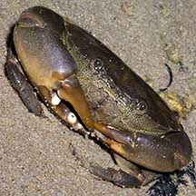
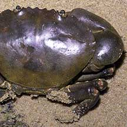
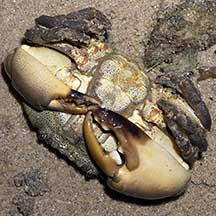
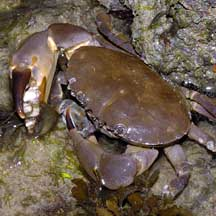
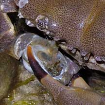
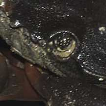

|
|
| crabs text index | photo index |
| Phylum Arthropoda > Subphylum Crustacea > Class Malacostraca > Order Decapoda > Brachyurans |
| Spotted-belly forceps crab Ozius guttatus Family Oziidae updated Dec 2019 Where seen? This large shy crab is sometimes seen on our Southern shores near rocky shores, sea walls and among coral rubble and near living reefs. It is more active at night, but even so, very quick to scuttle back into hiding when disturbed. 'Gutta' in Latin means 'spots'. Features: Body width 6-9cm. Body oval smooth upper surface. Edge smooth with a few (about 4) very shallow notches. Upperside reddish to dark brown, plain without patterns, underside pale orange with lots of tiny dark spots on its belly. Large pincers smooth (no pimples) with orange, reddish or brown tips, lower 'finger' tips often darker. Walking legs sparsely hairy. Eyes dark with white spots. Armed with a can-opener and forceps: One of its pincers is much larger. In a young crab, this enlarged pincer is armed with a curved tooth on the movable finger of its pincers. This tooth fits into the opening of a snail shell, and the pincer is used like a can-opener to carve a spiral opening in the snail shell. As the crab gets older and bigger, a large molar-like 'tooth' develops on the 'finger' with several smaller 'teeth' along the cutting edge. This is used to crush snail shells. The other pincer has slim 'fingers' with several smaller 'teeth' along the cutting edge. These slim 'fingers' act like forceps or chopsticks to remove the snail after its shell is peeled open or crushed. Sometimes confused with similar crabs in the same habitat. Here's more on how to tell apart big crabs with big pincers seen on the rocky shores and coral rubble. |
 Pulau Semakau, Oct 05 |
 Plain smooth upper side. |
 Spotted belly on the underside. |
|
 One with a 'peeled' snail. Sentosa, May 04 |
 Eyes dark with pale spots. |
| Spotted-belly forceps crabs on Singapore shores |
On wildsingapore
flickr
|
| Other sightings on Singapore shores |
 |
| Family
Oziidae recorded for Singapore from Wee Y.C. and Peter K. L. Ng. 1994. A First Look at Biodiversity in Singapore *Ng, Peter K. L. and Daniele Guinot and Peter J. F. Davie, 2008. Systema Brachyurorum: Part 1. An annotated checklist of extant Brachyuran crabs of the world **from WORMS
|
| Acknowledgements Grateful thanks to Crabhunter for confirmation of ID. Links
|